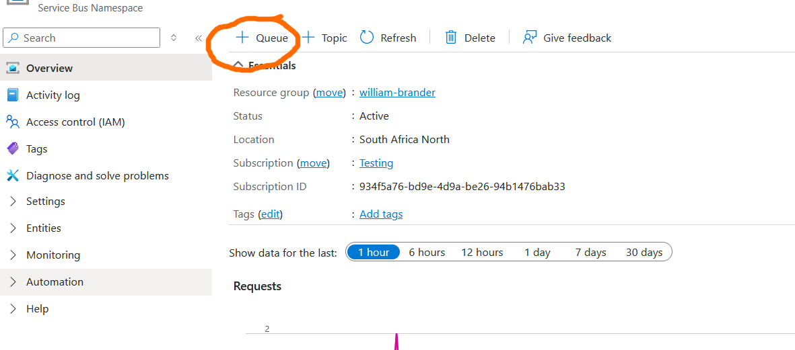
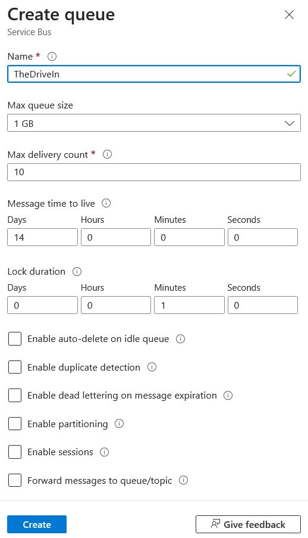
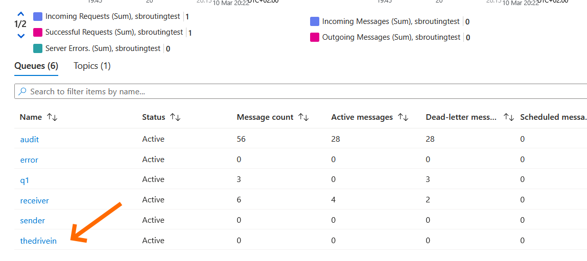
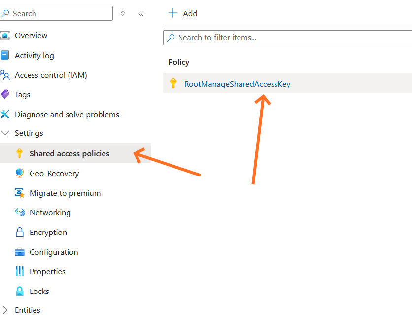
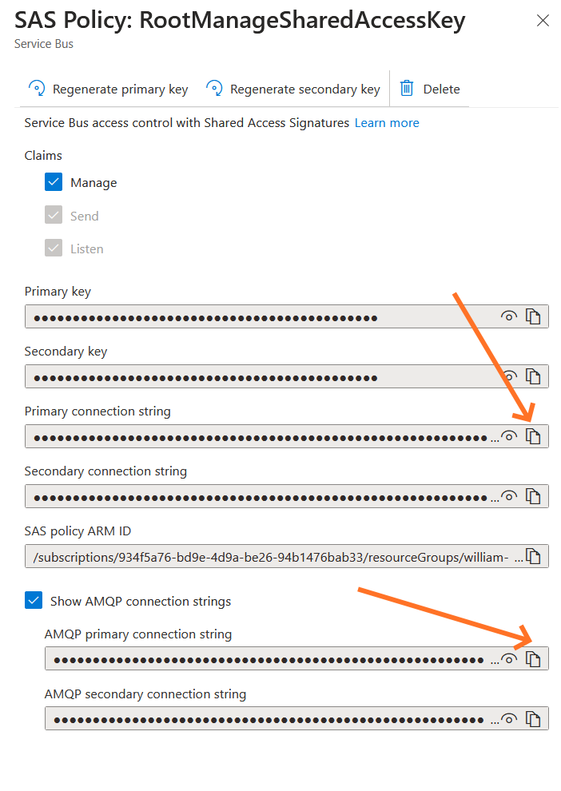
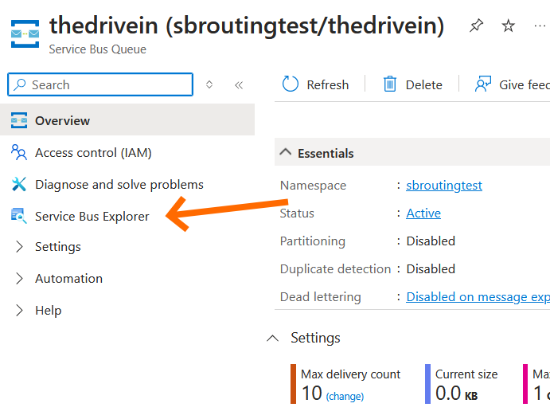
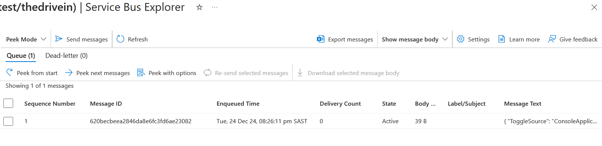

Listening to ASB Messages
We're about to start our foray into message-based distributed systems! This is where the real fun begins.
Instead of making HTTP calls to respond to events, messaging involves a sender, a receiver, and a broker. In this exercise we're going to
be creating these three parts.
1. Create an Azure Service Bus Queue
Azure Service Bus is going to be our broker of choice in this workshop. We'll start of with the basics: creating a queue in a Service Bus instance.
You've been given access to a Service Bus Resource in Azure Portal. Log in to Azure Portal, and find your Service Bus Resource. Everyone in the
workshop is using the same service bus instance, so your queue will have to have a unique name.
In the Azure Portal, navigate to the Service Bus Resource and click on the + Queue link at the top of the page.

Come up with a name for your device's queue - something fun but keep it clean 😉. This is the name of the queue that we will use to send messages to our device.
In this example, I called my queue TheDriveIn. All of the other settings can be left as default for now - we'll cover what they
are later. Once you've entered your queue's name, click Create to create the queue.

It shouldn't take more than a couple minutes for Azure to create your queue for you. Once it's done, you'll see your queue in the list of queues
at the bottom of the page.

With the queue now created, we have everything we need to be able to start using messages to communicate with our device.
2. Create a console application to send a message
We're going to start with a full .NET application instead of a NanoFramework application. This is mostly because we're just using NanoFramework
as a way to introduce the distributed systems concepts. The actual takeaways that I hope you get out of this are how to use the full SDK
for Azure Service Bus.
Add a new Console Application project to the solution that the NanoFramework project is in. This Console Application should
target the latest .NET Framework.
Add a reference to the Azure.Messaging.ServiceBus nuget package.
Now you can add the code to send a message. Sending a message using the Azure SDK involves at a minimum:
- Creating an instance of the
ServiceBusClient class
- Using the
ServiceBusClient to create a new instance of a ServiceBusSender
- Create a new
ServiceBusMessage
- Set the body of the message to be the content of a
ToggleLEDs object (for this exercide we'll do a string representation of JSON,
but more on this in later exercises)
- Send the message
The ToggleLEDs class should look like this:
public class ToggleLEDs
{
public string ToggleSource { get; set; }
}
When creating an instance of the ServiceBusClient you will require some way of connecting to the instance of ServiceBus. For our
purposes, we will use the connection string from the Azure Portal for this.
To get the connection string, open Azure Portal and find the Settings -> Shared access policies

This will open a tab on the right of the screen. Over here you can either copy the Connection String (for the Console Application) or the AMQP
connection string (for the NanoFramework application.)

Run your code. Your code should have now sent a message to the Azure Service Bus Queue. Let's validate that the message has been successfully
sent:
Navigate to the Service Bus instance in Azure Portal, and click on the queue that you created. On the next screen, click on the
Service Bus Explorer link

If your message was correctly sent, you'll be able to Peek the message from the queue by clicking Peek from start

Make sure you Peeked the message in Peek mode instead of Receive mode. Receive mode wll remove the message from the
queue, whilst Peek mode will leave the message on the queue so that our code can receive that message later.
Congratulations! If you've gotten this far, then you've successfully sent a message using Azure Service Bus 👏
3. Create a listener in NanoFramework
Now we'll pivot to NanoFramework to receive the message and process it. When communicating with Azure Service Bus with NanoFramework, we can't
use the same SDK as in our console application. Instead we're going to use a package called
AmqpNetLite. This SDK uses the AMQP protocol that Azure exposes in order to interact
with our queues.
Open the Deployment project and add a nuget reference to AMQPNetLite.nanoFramework.
Now that we have the Amqp SDK in our project, we can connect to our Service Bus and process messages in our queue. The general steps for
this are:
- Connecting to the Service Bus using the AMQP connection string as a parameter in the constructor for a
Connection class
- Creating a new instance of a
Session from the connection instance
- Creating a
ReceiverLink with the session, link name (anything descriptive), and the queue name
- Receive a
Message by calling the .Receive() method on the ReceiverLink instance
Once you've added the code to receive a message, deploy your application.
Once your application has read the message from the queue, you should refresh the Service Bus Manager queue peek page and validate that there
are no messages in the queue anymore.
4. Toggle the LEDs when a message comes in
Now that we've received a message, we can toggle the LEDs. Change your code to do that now.
You'll see that the way our call to .Receive() works is that it only receives one message before stopping. This isn't really helpful
as we'll probably want to respond to more than one message.
To do that, we have to change our call to .Receive(). Instead of calling .Receive() on the ReceiveLink,
change the call to .Start.
.Start takes 2 parameters:
- A
credit int
- An
onMessage MessageCallback
The credit parameter tells AmqpNetLite how many messages to consume at a time. Set this to 5 for now.
The onMessage parameter is the method that will be called whenever a message is received. You can either set this to a function, or
and action. Here is what an action version would look like:
receiverLink.Start(5, (receiver, message) =>
{
// process message here
});
Now with this, your receiver link will receive more than one message so your Console Application should be able to send multiple toggle messages
to the device to have it toggle multiple times.
Bonus round!
Done already? Waiting for everyone else to finish? Why not tackle some of these bonus challenges?
1. Make the NanoFramework listener send a message once it has toggled the LEDs
It's very rare that an application only listens and responds to incoming messages. More often than not, an application will receive incoming
messages, do something, and then publish (we'll explore this soon) one or more events to let other interested applications know the result
of the processing.
See if you can extend your demo to:
- Create a queue for your Console Application to receive messages
-
Send a
LedsToggled message to that new queue everytime the LEDs have been toggled (either by pushing the button, or by
processing the ToggleLeds message
-
Change your Console Application to read messages from the new queue you created, and display to the console each time the LEDs are toggled
These changes mean that your Console Application will be able to tell your device to toggle the LEDs, and the device will be able to tell your
console application whenever the LEDs have been toggled.
2. What happens when the NanoFramework listener throws an exception?
Change your NanoFramework application to throw an exception when toggling an exception.
- What does this do to your Console Application?
- Does the Console Application know that there has been an exception?
- What happens to the message in the queue?
- What if you throw the exception in different places of your code? Does that affect the behaviour?
3. How can you change your code to turn on/off instead of toggling?
Receiving a ToggleLEDs message is fine, but the caller doesn't know what state the LEDs are in when the message is sent.
Change your code to instead allow the caller to determine which LED must be on and which must be off.
Why would this be better or worse than a message that toggles the LEDs state?